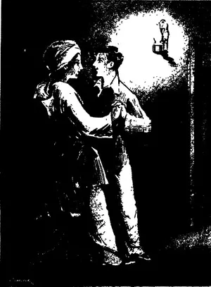

Published: ১৯৩৩
✓ Free Open-Access
কিশোরদের মন
Kishoroder Mon
লোকগাথা ও রূপকথা (Folk & Fairy Tales)শিশু ও কিশোর সাহিত্য (Children & YA)
📥 Direct Free Download Links
Prefer to read in our interactive reader?
Open in BookStore App →
Search, filter, and stream 2,900+ books with our rich dual-script storefront.
| Language | Bengali (বাংলা) |
|---|---|
| Available In | EPUB |
| Access | 100% Free & Open (Digital Preservation) |